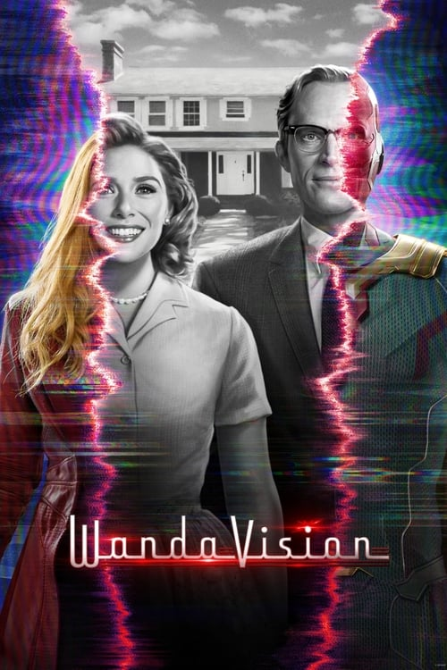

Séries
Descubra nossas séries favoritas!
The Queen's Gambit (2020)

Gênero: Drama
Sinopse: Esta minissérie da Netflix acompanha a vida de Beth Harmon, uma prodigiosa
jogadora de xadrez que luta contra o vício enquanto busca se tornar a maior jogadora de xadrez do
mundo. Ambientada durante a Guerra Fria, a série explora temas de genialidade, isolamento e a luta
pelo sucesso em um mundo dominado por homens.
WandaVision (2021)

Gênero: Super-herói, Ficção Científica, Drama
Sinopse: Uma série inovadora do universo Marvel que mistura sitcoms clássicas com o
MCU. A série segue Wanda Maximoff e Vision, que vivem uma vida suburbana idealizada, mas começam a
suspeitar que nem tudo é o que parece. Através de diferentes eras de sitcoms, WandaVision desvenda
um mistério complexo e emocional.
Squid Game (2021)

Gênero: Suspense, Drama
Sinopse: Esta série sul-coreana se tornou um fenômeno global, seguindo um grupo de
pessoas endividadas que aceitam participar de um jogo mortal para ganhar uma enorme quantia em
dinheiro. Cada jogo é baseado em brincadeiras infantis coreanas, mas com consequências mortais. A
série aborda temas de desigualdade social e desespero humano.
The Boys (2020-2024)

Gênero: Ação, Comédia, Drama
Sinopse: "The Boys" é uma série que subverte o gênero de super-heróis, apresentando
um grupo de vigilantes que tenta derrubar super-heróis corruptos e abusivos. Ambientada em um mundo
onde super-heróis são tratados como celebridades, a série é conhecida por seu humor negro, violência
gráfica e crítica social.
"As séries mais vistas em 2024"
On the Roam
Gênero: Suspense, Drama
Sinopse: "On the Roam" é uma série documental estrelada por Jason Momoa, que
explora a vida e as paixões de pessoas criativas em diversas áreas. Viajando pelo mundo, Momoa
conhece artistas, artesãos e músicos que se dedicam ao que amam com autenticidade. A série
destaca
seus processos criativos, histórias pessoais e desafios, enquanto Momoa reflete sobre a busca
por
propósito e a conexão com a natureza e a cultura. É uma celebração da criatividade, da
comunidade e
do espírito humano, inspirando os espectadores a viverem suas paixões.
Depois do Acidente

Gênero: Ação, Comédia, Drama
Sinopse: "Depois do Acidente" é uma série documental brasileira que acompanha a
vida de pessoas que sobreviveram a acidentes graves e enfrentam os desafios da recuperação
física e
emocional. Cada episódio foca em uma história real, mostrando o impacto do acidente na vida das
vítimas e suas famílias, bem como o processo de superação e resiliência. A série explora temas
como
dor, esperança e força interior, destacando a luta diária para reconstruir a vida após momentos
traumáticos. É um retrato poderoso da capacidade humana de enfrentar adversidades e encontrar
novos
significados na vida.